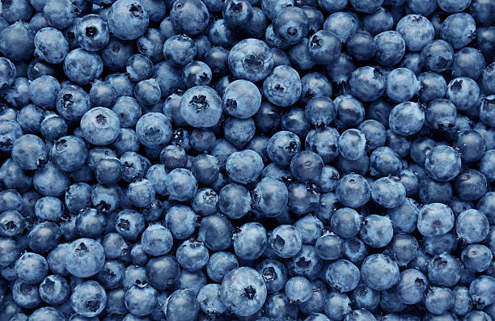

Blueberry Beets and Bananas

Description
This puree is a delightful combination of foods.
You may even consider eating it as an adult summer soup!
Ingredients
- 4 medium sized beets
- 1 pint of blueberries
- 1 banana
- 1 tsp of rosemary
Direction
- Preheat oven to 400 degrees.
- Wrap the beets in tin foil and place in preheated oven for about 45 minutes until soft.
- When beets have cooled, gentlyl rub the skin to remove.
- Place peeled beets, peeled banana blueberries and rosemary into a blender
- Blend until smooth
- Serve cold or room temperature